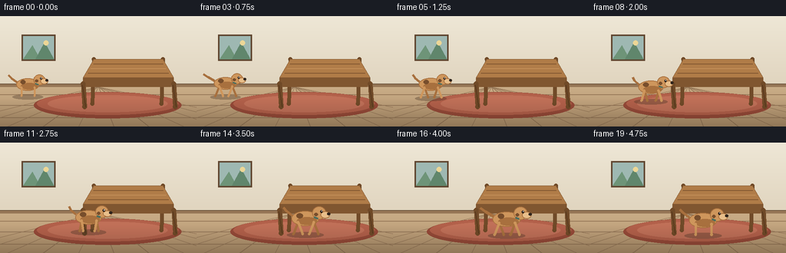
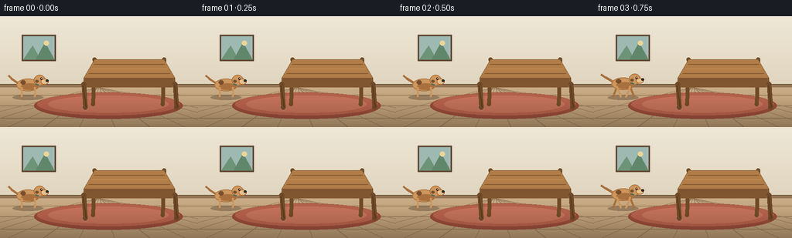

CODING AGENTS AS PIXEL WORLD MODELS
traex/Seed-2.1-Pro-0915 · dynamic_spatial_relationship_0000
点击播放 · 原生 RGB 像素
逐轮保存的候选
回放视频、检查图与代码变化。
每份候选均可单独播放。实际图片检查记录在下方工具轨迹中。
候选 01播放与检查图
点击播放 · 原生 RGB 像素


展开代码变化
--- 上一保存版本
+++ 本次保存版本
@@ -0,0 +1,255 @@
+"""Procedural text-to-video generation.
+
+Prompt: "A dog is on the left of a table, then the dog runs to the front
+of the table."
+
+Renders 20 RGB frames (256x144, 4 fps) by drawing a small perspective room,
+a wooden table and an articulated cartoon dog with a run cycle. Everything is
+drawn at 2x resolution and downsampled for cheap anti-aliasing.
+"""
+import math
+from pathlib import Path
+
+import numpy as np
+from PIL import Image, ImageDraw
+
+import artifact_io
+
+W, H, N, FPS = 256, 144, 20, 4.0
+S = 2 # supersampling factor
+
+# Palette (warm room, terracotta rug, wood table, tan dog)
+WALL_TOP = (238, 231, 214)
+WALL_BOTTOM = (224, 212, 190)
+FLOOR_FAR = (201, 172, 135)
+FLOOR_NEAR = (178, 146, 108)
+BASEBOARD = (150, 118, 86)
+RUG = (178, 96, 74)
+RUG_EDGE = (150, 74, 56)
+WOOD_TOP = (176, 124, 72)
+WOOD_LIGHT = (196, 144, 90)
+WOOD_DARK = (128, 86, 48)
+WOOD_LEG = (112, 74, 40)
+DOG_BODY = (206, 150, 92)
+DOG_DARK = (168, 112, 62)
+DOG_LIGHT = (232, 190, 138)
+DOG_SPOT = (120, 78, 44)
+BLACK = (48, 36, 28)
+
+
+def lerp(a, b, t):
+ return a + (b - a) * t
+
+
+def smoothstep(t):
+ t = min(1.0, max(0.0, t))
+ return t * t * (3 - 2 * t)
+
+
+def poly(draw, pts, fill, outline=None, width=1):
+ draw.polygon([(x * S, y * S) for x, y in pts], fill=fill, outline=outline)
+ if outline is not None and width > 1:
+ draw.line([(x * S, y * S) for x, y in pts + [pts[0]]], fill=outline, width=width * S)
+
+
+def ellipse(draw, cx, cy, rx, ry, fill, outline=None, width=1):
+ box = [(cx - rx) * S, (cy - ry) * S, (cx + rx) * S, (cy + ry) * S]
+ draw.ellipse(box, fill=fill, outline=outline, width=width * S)
+
+
+def line(draw, pts, fill, width=1):
+ draw.line([(x * S, y * S) for x, y in pts], fill=fill,
+ width=max(1, round(width * S)), joint="curve")
+
+
+def rounded_line(draw, p0, p1, width, fill):
+ line(draw, [p0, p1], fill, width)
+ r = width / 2
+ ellipse(draw, p0[0], p0[1], r, r, fill)
+ ellipse(draw, p1[0], p1[1], r, r, fill)
+
+
+def draw_room(img):
+ draw = ImageDraw.Draw(img, "RGBA")
+ horizon = 92
+
+ # Vertical gradient wall.
+ for y in range(horizon):
+ t = y / horizon
+ color = tuple(int(lerp(WALL_TOP[i], WALL_BOTTOM[i], t)) for i in range(3))
+ draw.rectangle([0, y * S, W * S, (y + 1) * S], fill=color)
+
+ # Floor gradient (darker toward the camera).
+ for y in range(horizon, H):
+ t = (y - horizon) / (H - horizon)
+ color = tuple(int(lerp(FLOOR_FAR[i], FLOOR_NEAR[i], t)) for i in range(3))
+ draw.rectangle([0, y * S, W * S, (y + 1) * S], fill=color)
+
+ # Floor planks converging toward a vanishing point.
+ vp = (128, horizon)
+ for fx in range(-2, 9):
+ x_bottom = fx * 46 + 10
+ line(draw, [(vp[0], vp[1]), (x_bottom, H)], (150, 120, 88), 1)
+ for y in (102, 116, 132):
+ line(draw, [(0, y), (W, y)], (150, 120, 88), 1)
+
+ # Baseboard.
+ draw.rectangle([0, (horizon - 4) * S, W * S, horizon * S], fill=BASEBOARD)
+ line(draw, [(0, horizon - 4), (W, horizon - 4)], (110, 84, 60), 1)
+
+ # Framed picture on the wall for depth.
+ fx, fy, fw, fh = 30, 26, 40, 30
+ draw.rectangle([(fx - 2) * S, (fy - 2) * S, (fx + fw + 2) * S, (fy + fh + 2) * S],
+ fill=(96, 70, 48))
+ draw.rectangle([fx * S, fy * S, (fx + fw) * S, (fy + fh) * S], fill=(158, 184, 178))
+ poly(draw, [(fx, fy + fh), (fx + 12, fy + 12), (fx + 22, fy + fh)], (110, 148, 120))
+ poly(draw, [(fx + 16, fy + fh), (fx + 28, fy + 8), (fx + fw, fy + fh)], (96, 134, 108))
+ ellipse(draw, fx + 30, fy + 9, 3.2, 3.2, (236, 214, 150))
+
+ # Rug (ellipse) under the scene.
+ ellipse(draw, 140, 116, 96, 17, RUG_EDGE)
+ ellipse(draw, 140, 114, 92, 14.5, RUG)
+ ellipse(draw, 140, 114, 78, 11, (192, 112, 88))
+
+
+def draw_table(img):
+ """3/4-view wooden table, occupying the center-right of the frame."""
+ draw = ImageDraw.Draw(img, "RGBA")
+
+ far_l, far_r = (122, 56), (212, 56)
+ near_l, near_r = (108, 80), (226, 80)
+ floor_y = 118
+
+ # Back legs (slightly inset, darker).
+ for top in (far_l, far_r):
+ bottom = (top[0] - 2, floor_y - 4)
+ rounded_line(draw, top, bottom, 5, WOOD_LEG)
+
+ # Tabletop: side face first, then top.
+ poly(draw, [near_l, near_r, (near_r[0], near_r[1] + 6),
+ (near_l[0], near_l[1] + 6)], WOOD_DARK)
+ poly(draw, [far_l, far_r, near_r, near_l], WOOD_TOP, outline=WOOD_DARK, width=1)
+ # Wood grain highlights on the top.
+ for i, t in enumerate((0.25, 0.5, 0.75)):
+ y = lerp(far_l[1], near_l[1], t)
+ xl = lerp(far_l[0], near_l[0], t)
+ xr = lerp(far_r[0], near_r[0], t)
+ line(draw, [(xl + 3, y), (xr - 3, y)],
+ WOOD_LIGHT if i == 1 else WOOD_DARK, 1)
+ # Front apron.
+ poly(draw, [(near_l[0] + 2, near_l[1] + 6), (near_r[0] - 2, near_r[1] + 6),
+ (near_r[0] - 4, near_r[1] + 12), (near_l[0] + 4, near_l[1] + 12)],
+ WOOD_DARK)
+
+ # Front legs (in front of the apron).
+ for top in (near_l, near_r):
+ bottom = (top[0] + 2, floor_y)
+ rounded_line(draw, (top[0], top[1] + 8), bottom, 6, WOOD_LEG)
+ line(draw, [(top[0] - 1, top[1] + 10), (bottom[0] + 1, floor_y)],
+ (84, 54, 28), 1)
+
+
+def draw_dog(img, cx, feet_y, scale, phase, running, facing=1):
+ """Side-view cartoon dog. phase drives the run cycle."""
+ draw = ImageDraw.Draw(img, "RGBA")
+ s = scale
+ bob = (abs(math.sin(phase)) * 1.6 * s) if running else 0
+ cy = feet_y - 15 * s - bob # body center
+
+ # Ground shadow.
+ ellipse(draw, cx, feet_y + 1.5, 20 * s, 3.2 * s, (70, 50, 34, 90))
+
+ swing = math.sin(phase) if running else 0
+ swing2 = math.sin(phase + math.pi) if running else 0
+
+ def leg(hip_x, swing_v, color):
+ hip = (cx + facing * hip_x * s, cy + 4 * s)
+ foot = (hip[0] + facing * swing_v * 5 * s, feet_y)
+ rounded_line(draw, hip, foot, 2.6 * s, color)
+
+ # Far-side legs (darker, drawn first).
+ leg(-8, swing2, DOG_DARK)
+ leg(9, swing, DOG_DARK)
+
+ # Tail: curved wagging line at the rear.
+ wag = math.sin(phase * 1.1) * (0.5 if running else 0.18)
+ tail_base = (cx - facing * 14 * s, cy - 3 * s)
+ tail_mid = (tail_base[0] - facing * (7 + wag * 3) * s, tail_base[1] - 5 * s)
+ tail_tip = (tail_mid[0] - facing * (4 + wag * 4) * s, tail_mid[1] - 4 * s)
+ line(draw, [tail_base, tail_mid, tail_tip], DOG_DARK, 2.8 * s)
+
+ # Body with a slightly darker belly.
+ ellipse(draw, cx, cy, 15 * s, 8 * s, DOG_BODY, outline=DOG_DARK, width=1)
+ ellipse(draw, cx + facing * 2 * s, cy + 2.6 * s, 11 * s, 4.2 * s, DOG_DARK)
+ # Back spot.
+ ellipse(draw, cx - facing * 6 * s, cy - 3 * s, 3.4 * s, 2.6 * s, DOG_SPOT)
+
+ # Near-side legs (in front of body).
+ leg(-8, swing, DOG_BODY)
+ leg(9, swing2, DOG_BODY)
+
+ # Head group at the front of the body.
+ hx = cx + facing * 15 * s
+ hy = cy - 6 * s
+ hy += math.sin(phase) * 0.06 * s if running else 0
+
+ # Floppy ear (behind head).
+ ear_pts = [(hx - facing * 2 * s, hy - 5 * s),
+ (hx + facing * 4 * s, hy - 6 * s),
+ (hx + facing * 3 * s, hy + 5 * s + math.sin(phase + 1) * 1.2 * s),
+ (hx - facing * 2 * s, hy + 3 * s)]
+ poly(draw, ear_pts, DOG_DARK, outline=(96, 60, 34))
+
+ ellipse(draw, hx, hy, 7.5 * s, 7 * s, DOG_BODY, outline=DOG_DARK, width=1)
+ # Snout and nose.
+ snout_x = hx + facing * 6.5 * s
+ ellipse(draw, snout_x, hy + 2 * s, 5 * s, 3.6 * s, DOG_LIGHT, outline=DOG_DARK, width=1)
+ ellipse(draw, snout_x + facing * 3.6 * s, hy + 0.8 * s, 1.7 * s, 1.5 * s, BLACK)
+ # Eye.
+ ellipse(draw, hx + facing * 2.4 * s, hy - 1.6 * s, 1.3 * s, 1.5 * s, BLACK)
+ ellipse(draw, hx + facing * 2.8 * s, hy - 2.1 * s, 0.5 * s, 0.5 * s, (255, 255, 255))
+ # Cheek spot.
+ ellipse(draw, hx - facing * 3.5 * s, hy + 1.5 * s, 2 * s, 1.8 * s, DOG_SPOT)
+ # Collar.
+ line(draw, [(hx - facing * 5.5 * s, hy + 4.5 * s),
+ (hx - facing * 1.5 * s, hy + 6 * s)], (72, 110, 96), 2 * s)
+
+
+def render_frame(i):
+ img = Image.new("RGB", (W * S, H * S))
+ draw_room(img)
+
+ # Motion: hold left for the first frames, run to the front, then hold.
+ run_t = smoothstep((i - 2) / 14.0) # movement spans frames ~2..16
+ start_x, end_x = 36, 148
+ start_feet, end_feet = 104, 120 # moving toward the camera
+ start_scale, end_scale = 1.0, 1.22
+ cx = lerp(start_x, end_x, run_t)
+ feet_y = lerp(start_feet, end_feet, run_t)
+ scale = lerp(start_scale, end_scale, run_t)
+
+ # Table is behind the dog once it reaches the front.
+ draw_table(img)
+
+ running = 2 < i < 17
+ phase = (i - 2) * 1.7 if running else i * 0.6
+ draw_dog(img, cx, feet_y, scale, phase, running)
+
+ # Gentle vignette toward the bottom edge.
+ arr = np.asarray(img).astype(np.float32)
+ yy = np.linspace(0, 1, H * S)[:, None]
+ vignette = 1 - 0.18 * np.clip(yy - 0.75, 0, 1) / 0.25
+ arr *= vignette[..., None]
+ img = Image.fromarray(np.clip(arr, 0, 255).astype(np.uint8))
+ return np.asarray(img.resize((W, H), Image.Resampling.LANCZOS), dtype=np.uint8)
+
+
+def main():
+ case_dir = Path(__file__).parent
+ frames = [render_frame(i) for i in range(N)]
+ artifact_io.save(frames, case_dir)
+ print(f"Saved {len(frames)} frames {W}x{H} @ {FPS} fps to {case_dir}")
+
+
+if __name__ == "__main__":
+ main()
可观测工具轨迹
实际执行的命令与返回图片。
命令 1exit 0
/bin/bash -lc 'ls -la && cat prompt.txt && cat GENERATION_RULES.md && cat task_spec.json'
命令 2exit 0
/bin/bash -lc 'cat artifact_io.py && python3 -c "import PIL, numpy; print(PIL.__version__, numpy.__version__)"'
命令 3exit 0
/bin/bash -lc 'cd "$(pwd)" && python3 generate.py && ls -la frames | head -6 && ls -la'
命令 4exit 0
/bin/bash -lc "python3 - <<'EOF'
import numpy as np
from PIL import Image
d = np.stack([np.asarray(Image.open(f\"frames/{i:02d}.png\")) for i in range(20)])
print(\"shape\", d.shape, \"range\", d.min(), d.max())
# dog-tan mask (body color ~ (206,150,92)); locate centroid per frame
mask = (abs(d[...,0].astype(int)-206)<28) & (abs(d[...,1].astype(int)-150)<28) & (abs(d[...,2].astype(int)-92)<28)
for i in [0,2,5,9,13,16,19]:
ys,xs = np.where(mask[i])
print(f\"frame {i:2d}: dog pixels={mask[i].sum():4d} centroid=({xs.mean():6.1f},{ys.mean():5.1f}) bbox x[{xs.min()},{xs.max()}] y[{ys.min()},{ys.max()}]\")
# frame-to-frame change
for i in range(1,20):
print(i, np.count_nonzero(np.any(d[i]"'!=d[i-1],axis=2)), end=" ")
print()
EOF'保存候选 1 份；完成命令 4 次；可验证图片返回 0 张。原始 API 响应与完整日志保留在本地。